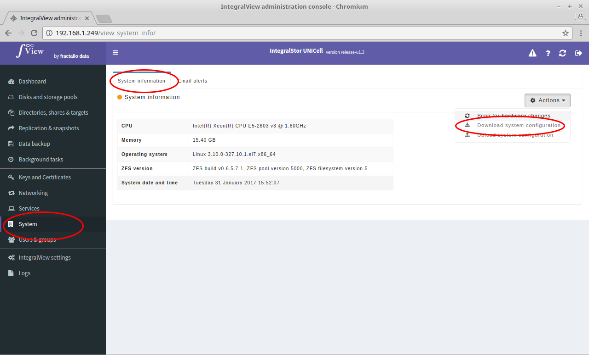

If there is an issue that the support personel need to examine, use this option to download the complete information about the system.

-
Select the “System” main menu item on the left of the screen.
-
Select the “System information” sub menu tab
-
Click on the “Download system configuration” button
-
This results in all the system configuration files and log files being downloaded in one compressed file.